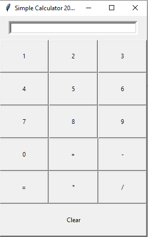
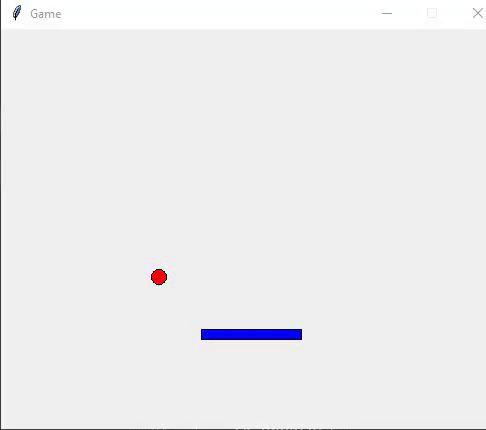
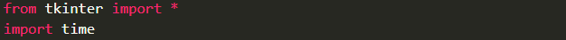
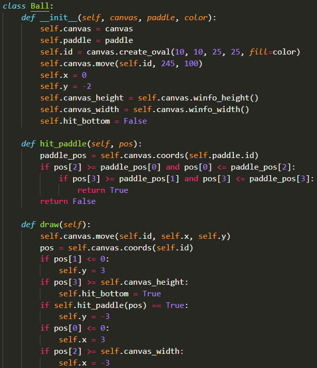
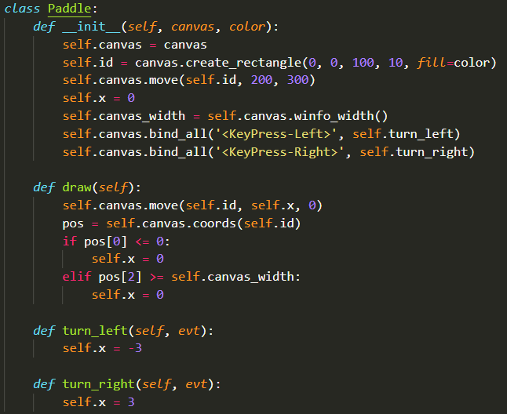
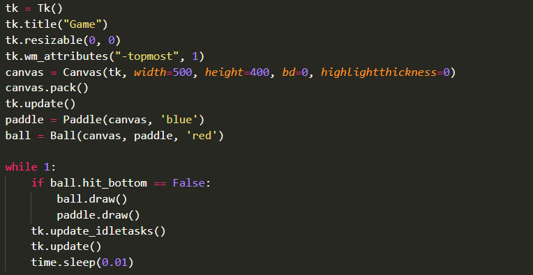

1
Калькулятор
среднена компьютере
Создай калькулятор с кнопками цифр и действий.

🖥️ Эту задачу нужно запускать в VS Code на компьютере (модули вроде turtle и tkinter не работают в браузере).
Делаем программы с окнами и кнопками. Модуль tkinter работает только на компьютере — запускай код в VS Code.
Создай калькулятор с кнопками цифр и действий.

🖥️ Эту задачу нужно запускать в VS Code на компьютере (модули вроде turtle и tkinter не работают в браузере).
Создай «игру»: персонаж на холсте Canvas, который управляется с клавиатуры.

🖥️ Эту задачу нужно запускать в VS Code на компьютере (модули вроде turtle и tkinter не работают в браузере).




Сделай окно с надписью «Кликов: 0» и кнопкой «Жми!». Каждое нажатие увеличивает счётчик.
🖥️ Эту задачу нужно запускать в VS Code на компьютере (модули вроде turtle и tkinter не работают в браузере).
from tkinter import *
count = 0
def click():
global count
count += 1
label['text'] = f'Кликов: {count}'
window = Tk()
window.title('Кликер')
label = Label(window, text='Кликов: 0', font=('Arial', 24))
label.pack(padx=20, pady=10)
Button(window, text='Жми!', font=('Arial', 18), command=click).pack(pady=10)
window.mainloop()Сделай окно с полем ввода, кнопкой «Перевести» и надписью с результатом: градусы Цельсия → Фаренгейты. Если введено не число — покажи «Введите число».
🖥️ Эту задачу нужно запускать в VS Code на компьютере (модули вроде turtle и tkinter не работают в браузере).
from tkinter import *
def convert():
try:
c = float(entry.get())
result['text'] = f'{c * 9 / 5 + 32:.1f} °F'
except ValueError:
result['text'] = 'Введите число'
window = Tk()
window.title('Конвертер температур')
Label(window, text='Градусы Цельсия:').grid(row=0, column=0, padx=10, pady=10)
entry = Entry(window)
entry.grid(row=0, column=1, padx=10)
Button(window, text='Перевести', command=convert).grid(row=1, column=0, columnspan=2, pady=5)
result = Label(window, text='', font=('Arial', 16))
result.grid(row=2, column=0, columnspan=2, pady=10)
window.mainloop()